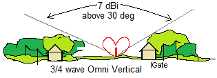

BRICSAT - The first attempted APRS Satellite with Thrusters
US Naval Academy Satellite Lab,
Bob Bruninga, WB4APR
Midns teater,(16)
BRICSAT shown inside the P-POD separation device (above) was launched along with PSAT in May of 2015. This is just one of many APRS Networked Amateur Satellites that will be on Orbit in 2016 and all will appear on the live
APRS satellite downlink page and ISS downlink page:
PCsat-1 in orbit since 2001 semi-operational
ARISS on the ISS since 2007
Psat Operational May 2015
QIKcom-1 with terrestrial APRS alert beacon on ISS, but activation blocked by FCC SNAFU
QIKcom-2 with APRStt for launch Summer 2016
PSAT-2 To be Launched spring of 2017
BRICSAT-2 To be Launched spring of 2017
ASTARS missions: Prior APRS missions on other spacecraft, ISS, Shuttle and MIR
The unique features of BRICSAT are the APRS transponder, its PSK-31 transponder and its electric prolusion thruster experiment which are being modularized into
standard Cubesat bus modules and integrated all into one 1.5U cubesat.
. .
OVERVIEW: . BRICSAT was a Naval Academy student satellite launched with PSAT but it had a negative power budget and has been unable to support all of its primary missions.
BRICSAT was to
continue the PCsat(2001) and PSAT(2015) missions noted above containing
an APRS packet radio communications transponder for relaying remote telemetry,
sensor and user data
from remote users and amateur radio environmental experiments or other data sources back to
Amateur Radio experimenters via a global network
of internet linked volunteer ground stations. The APRS transponder also includes
telemetry, and some command and control for the user modes.
Operations under ITU Rules: BRICSAT was designed to operate under the ITU rules of the Amateur Satellite Service. See the
IARU coordination letter
and how BRICSAT design and operation fit entirely within the ITU International Amateur Radio
RULES. The FCC does not issue
licesnses for Amateur Radio Spacecraft
(see public notice) because they are operated under the
license of the individual amateur radio operator who is responsable to assure
that both the design and operation are within the rules of the ITU as interpreted by the IARU.
Packet Uplink . . . . . 145.825 1200 baud APRS (shared with ISS, PCSAT, UO11 and others!)
Packet Downlink. . . 437.975 MHz
PSK31 Downlink . . 435.350 MHz +/- 5 kHz FM (300 mw)
PSK31 Uplink. . . . . . 28.120 MHz +2 kHz PSK31 SSB (75 watts into omni vertical authorized)
BRICSAT was to be another APRS satellite that can digipeat user packets just like the original
PCSAT (NO44)
and the packet system on the ISS and its sister PSAT.
 Also exciting is the PSK-31 transponder that was also on BRICSAT: This transponder, built by students at Brno university was to permit dozens of simultaneous PSK31 users to operate full duplex and maintain a continuous group dialogue throughout the pass. But operating full duplex on PSK-31 is new and it will take a while for users to figure out how to do this. KO6TD prepared the table at right of capabiites of typical PSK31 user software. Only WinPSK can operate full duplex but others can run two instances of the same software, one for transmit and one for receive.
Also exciting is the PSK-31 transponder that was also on BRICSAT: This transponder, built by students at Brno university was to permit dozens of simultaneous PSK31 users to operate full duplex and maintain a continuous group dialogue throughout the pass. But operating full duplex on PSK-31 is new and it will take a while for users to figure out how to do this. KO6TD prepared the table at right of capabiites of typical PSK31 user software. Only WinPSK can operate full duplex but others can run two instances of the same software, one for transmit and one for receive.
Run Full-Duplex: But what really works for users is to run Andy, K0SM's
TX-only program that not only lets your run full duplex with your existing PSK31 downlink, but it also pre-compensates your uplink for Doppler as shown below! You can see his uplink coming down as a straigt track while others are showing Doppler. Most PSK31 clients can compensate for up to 1 Hz/sec of Doppler, but Andy's program makes your signal constant. Other users without compensation, can drift from 1 to 6 Hz per second depending on where they are relative to the track of the satellite.

See Brno University PSK31 transponder details.

Operations in the Amateur Satellite Service:
The packet and PSK31 transponders on BRICSAT are operated in the Amateur Satellite Service to encourage
amateur radio students,
educators and experimenters
around the world to contribute additional satellities to this constellation on 145.825 MHz or
to build interesting self motivated remote sensors suitable for the uplink channel.
See our
ocean or bay oceanographic data buoys for examples.
This kind of Amateur Radio experimentation fits well in the ITU rules
(see BRICSAT-2 justification)
for operating in this service
and well serve our educational and outreach goals for student projects encouraging young people to
be interested in Science, Technology, Engineering and Math.
APRS Packet Transponder: The APRS packet transponder
is an AX.25 Packet Radio Relay similar to what is flying on
PCsat and the
ISS. This ongoing mission in space on the original PCsat
is now over 12 years old and pioneered
this very popular operating mode via the ISS since 2006. Both of these
missions deliver packets to users worldwide via the global network of
volunteer ground stations feeding the two downlink capture pages:
psat.aprs.org and
ariss.net. These pages display live maps such as the one
above, of the most
recent user position data and capture all message traffic between users.
See the APRS link budgets. In addition there
is also a PSK31 transponder as noted below.

 PSK31 Transponder: The Brno University
PSK31 Multi-user FDMA transponder experiment is
similar to what we flew on
RAFT and
PCSAT2 missions.
See the full PSK31 design concept here.
This text messaging transponder allows messaging between up to 30 modest ground stations simultaneously.
In the example waterfall display above, 10 users are clearly visible.
Each user transmits a 31 Hz wide narroband transmission within the 3 kHz wide transponder, and all
can be seen simultaneously via the UHF FM downlink. Uplink stations do not need gain antennas on the
HF uplink but can use a vertical monopole antenna and 75 Watt SSB transmitter to give the transmit antenna profile
as shown above.
To calculate the PSK31 link budgets
we combined the user TX antenna gain profile with the variation in range gain from the horizon to
over 60 degree elevation as shown here at right. The combination gives an uplink power variation
per user of less than +/- 4 dB over 90% of the duration of the pass.
PSK31 Transponder: The Brno University
PSK31 Multi-user FDMA transponder experiment is
similar to what we flew on
RAFT and
PCSAT2 missions.
See the full PSK31 design concept here.
This text messaging transponder allows messaging between up to 30 modest ground stations simultaneously.
In the example waterfall display above, 10 users are clearly visible.
Each user transmits a 31 Hz wide narroband transmission within the 3 kHz wide transponder, and all
can be seen simultaneously via the UHF FM downlink. Uplink stations do not need gain antennas on the
HF uplink but can use a vertical monopole antenna and 75 Watt SSB transmitter to give the transmit antenna profile
as shown above.
To calculate the PSK31 link budgets
we combined the user TX antenna gain profile with the variation in range gain from the horizon to
over 60 degree elevation as shown here at right. The combination gives an uplink power variation
per user of less than +/- 4 dB over 90% of the duration of the pass.
 Global Experimental Data Channel: BRICSAT's packet transponder was intended to contribute to the space segment of this APRS
initiative to encourage both new satellite construction in support of this experimental
data channel and lower cost buoy and
sensor experimentation at other schools as shown below.
Today, the only Amateur satellites that are available for
no cost to schools with such experiments are the student project spacecraft built at the Naval Academy. But with QIKCOM-1 and others we hope to commence an ongoing full time presence in
space to continue this support of the 145.825 data uplink channel for future experiments.
To this end we hope other schools to either build additional 145.825 MHz relay satellites
and/or to build experimental sensors. The complete comms system including data
transponder fits on one 3.4 inch square card shown here.
We hope that QIKCOM-1 will be just one more Egg in this
chicken-egg conundrum.
Global Experimental Data Channel: BRICSAT's packet transponder was intended to contribute to the space segment of this APRS
initiative to encourage both new satellite construction in support of this experimental
data channel and lower cost buoy and
sensor experimentation at other schools as shown below.
Today, the only Amateur satellites that are available for
no cost to schools with such experiments are the student project spacecraft built at the Naval Academy. But with QIKCOM-1 and others we hope to commence an ongoing full time presence in
space to continue this support of the 145.825 data uplink channel for future experiments.
To this end we hope other schools to either build additional 145.825 MHz relay satellites
and/or to build experimental sensors. The complete comms system including data
transponder fits on one 3.4 inch square card shown here.
We hope that QIKCOM-1 will be just one more Egg in this
chicken-egg conundrum.